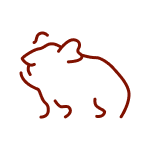

DYRENE
 HUND
HUND
 KAT
KAT

GNAVER
ZIGGI
1 ÅR 3 MD
11 DAGE PÅ INTERNAT
"Jeg er en jagthund, som kommer
fra en gård med masser af plads"
1 ÅR 3 MD
11 DAGE PÅ INTERNAT
"Jeg er en jagthund, som kommer
fra en gård med masser af plads"
KODA
1 ÅR
24 DAGE PÅ INTERNAT
"Som I kan se på mit billede, er jeg
en hund med en masse charme"
1 ÅR
24 DAGE PÅ INTERNAT
"Som I kan se på mit billede, er jeg
en hund med en masse charme"
FRIDA
7 ÅR
47 DAGE PÅ INTERNAT
"Jeg er en kat i min bedste alder, med et godt jagtinstinkt"
7 ÅR
47 DAGE PÅ INTERNAT
"Jeg er en kat i min bedste alder, med et godt jagtinstinkt"
1 2 3